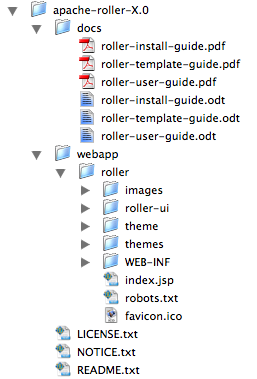
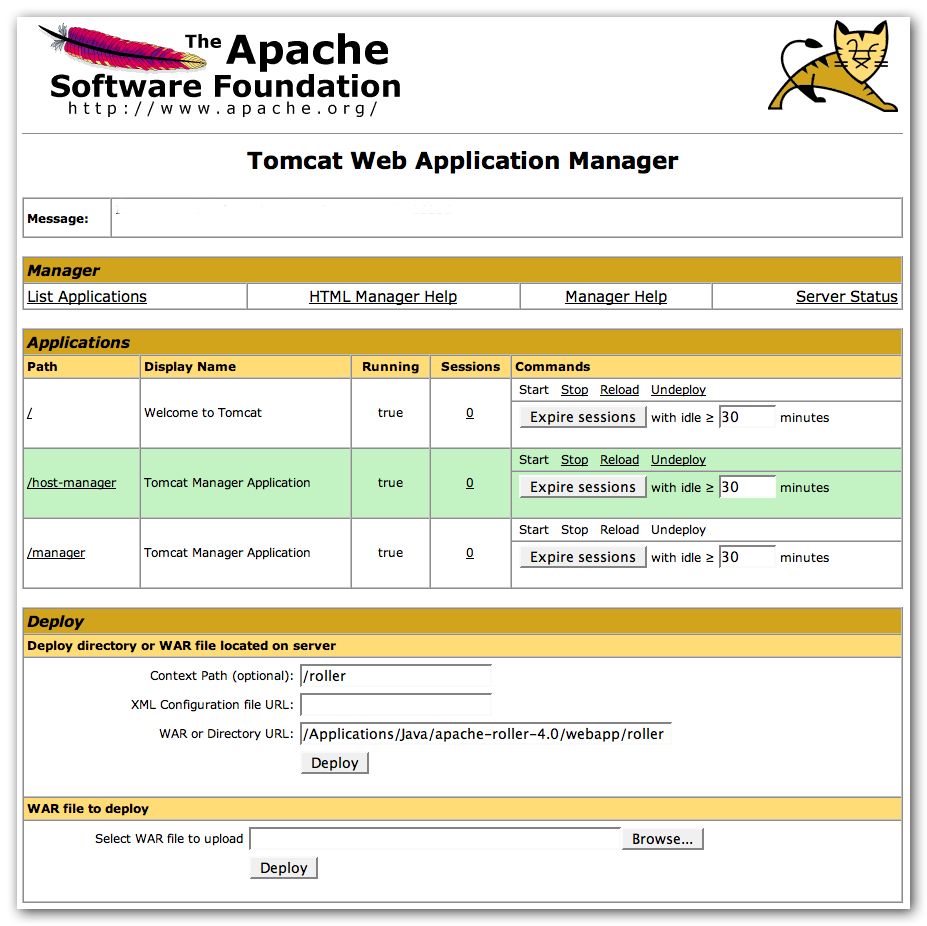
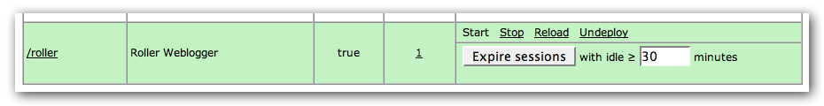
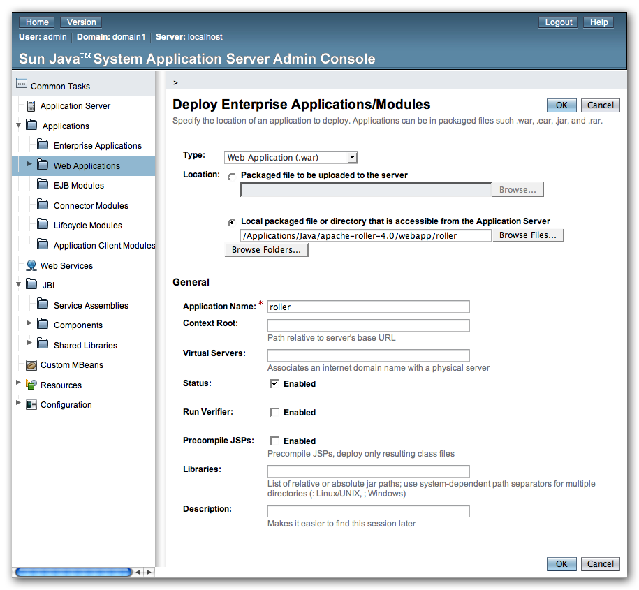
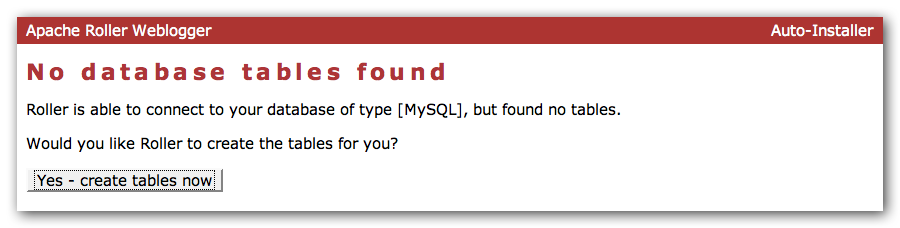

If Roller doesn't start-up, look for the problem in the logs. You can find them in your Glassfish domain's logs directory. The Glassfish log file is server.log and the Roller log is roller.log.
Installation Guide
Apache Roller Weblogger
Version 4.0
Table of Contents
1 Overview 3
1.1 Copyright and trademark information 3
1.2 Feedback 3
1.3 Acknowledgments 3
1.4 Modifications and Updates 3
2 The 5-minute install 4
3 Ready to roll? 5
3.1 Tomcat: JavaMail and Activation 5
3.2 Tomcat: URI encoding needed for I118N 5
4 Download and un-package Roller 6
4.1 Installation directory layout 6
4.2 The Roller Weblogger WAR 6
5 Prepare your database for Roller 7
5.1 Create a database for Roller 7
5.2 Check your JDBC driver setup 7
5.3 MySQL and Oracle considerations 7
6 Configure Roller 8
6.1 MySQL example 8
7 Deploy Roller 9
7.1 Put roller-custom.properties in classpath 9
7.2 Deploy Roller via administration console 9
8 Getting started with Roller 12
8.1 Navigate to Roller and finish the install 12
8.2 Register a user and create a weblog 13
9 Configuration tips and tricks 14
9.1 Setting up Roller's Planet feed aggregator 14
9.2 Changing keys in security.xml 15
9.3 Using Server-provided database and mail resources 16
9.4 Manual table creation and upgrade 17
10 Upgrading Roller 18
10.1 For those upgrading from Roller 2.x to Roller 4.0 18
10.2 Backup your old Roller 19
10.3 Install and startup the new Roller 20
11 roller.properties 21
This document describes how to install the Apache Roller Weblogger software. It explains what you need to install first, how to download Roller, how to configure Roller and how to install it to your existing Java application server and relational database. If also offers a 5-minute install option for more advanced folks.
The contents of this document are subject to the terms of the Apache Software License.
All trademarks within this document belong to legitimate owners.
Please direct any comments or suggestions about this document to: user@roller.apache.org
The original version of this document was written by Dave Johnson. The document is currently written and updated by the Apache Roller project of the Apache Software Foundation.
The general format of this document was based on the documentation template used by the OpenDS project which in turn was based on the templates used by the OpenOffice.org project.
|
Date |
Description of Change |
|---|---|
|
July 2007 |
Rewritten for simplified Roller 4.0 installation process |
If you really know what you're doing, you just want to get Roller up-and-running for a quick evaluation and you are using a well-supported platform (e.g. Tomcat and MySQL), you can probably get up and running in about 5-minutes by following the simple instructions on this page. If you're not so confident, then skip this page and go on to Section 3. Here's what you do for the 5-minute install:
STEP 1: Download Roller and un-package into a directory on your disk via Zip or GNU Tar.
STEP 2: Create a database for the Roller
tables.
For exmaple, on MySQL you might do something like
this:
% mysql -u root -p password: ***** mysql> create database rollerdb; mysql> grant all on rollerdb.* to scott@'%' identified by 'tiger'; mysql> grant all on rollerdb.* to scott@localhost identified by 'tiger';
STEP 3: Create a roller-custom.properties file in your Servlet container's classpath, e.g. on Tomcat you'd put it in common/classes. Put the settings below into the file and substitute your database and mail connection parameters for those in bold.
installation.type=auto
database.configurationType=jdbc
database.jdbc.driverClass=com.mysql.jdbc.Driver
database.jdbc.connectionURL=jdbc:mysql://localhost:3306/rollerdb
database.jdbc.username=scott
database.jdbc.password=tiger
mail.configurationType=properties
mail.hostName=smtp-server.example.com
mail.username=scott
mail.password=tiger
STEP 4: Check your Servlet container's JDBC and JavaMail setup. Make sure you've got the JDBC driver for your database in your Servlet container's classpath, e.g. on Tomcat place the driver JAR in common/lib. And on Tomcat, if you want to be able to send mail you'll need to add the JavaMail and Activation jars (mail.jar and activation.jar) there too.
STEP 5: Deploy Roller to your Servlet container using your container's Admin Console deploy Roller as a directory. The Roller WAR directory is in the installation directory under webapp/roller.
STEP 6: Browse to Roller and get Rollin' (probably at http://localhost:8080/roller). If Roller is up and running, then proceed to Section 8 Getting started with Roller. If Roller isn't up and running and you can 't figure out why, then try the normal installation procedure starting with Section 3 below.
First, let's make sure you have everything you need to install and run Roller.
Roller is a database-driven Java web application. To run it you need Java, a Java Servlet container such as Tomcat and a database such as MySQL. More specifically, here's what you need to install and run Roller:
The Java development kit, specifically the Sun Java 2 SE 1.5 JDK. The computer on which you install Roller should be configured to run with the Java SE 5. Roller 3.x was the last major Roller release to support Java 1.4.2.
A Java application server, or more specifically a Servlet container that supports the Servlet 2.4 API. Hereinafter, we'll just call this your server. The Roller community tends to use and is best able to answer questions about Tomcat 5.5, Tomcat 6.0, Sun Web Server 7.0 and Glassfish 2.0.
A relational database such as MySQL or Apache Derby. The Roller community tends to use and is best able to answer questions about MySQL and Apache Derby, but it is possible to use other databases with Roller. Roller includes database creation scripts for DB2, Derby, HSQL-DB, Microsoft SQL Server, MySQL, Oracle and PostgreSQL.
If you're using Tomcat, check the Tomcat Considerations section below, otherwise you are ready to move on to Section 4: Download and un-package Roller.
Tomcat does not include the Java Mail and Activation jars that Roller needs for email notification, So, if you like to use Roller's e-mail notification features, you'll need to download those jars and place them in Tomcat's classpath. Download them from Sun (http://java.sun.com/products/javamail) and place them in Tomcat's common/lib directory.
Roller supports internationalization (I18N), but on Tomcat some additional configuration is necessary. You must ensure that Tomcat's URI encoding is set to UTF-8. You can do this by editing the Tomcat configuration file conf/server.xml and adding URIEncoding=”UTF-8” to each connector element, as shown below:
<Connector port="8080"
maxThreads="150" minSpareThreads="25" maxSpareThreads="75"
enableLookups="false" redirectPort="8443" debug="0"
acceptCount="100" connectionTimeout="20000"
disableUploadTimeout="true"
URIEncoding="UTF-8" />
And make sure you do this for every connector through which you use Roller. For example, if you use the AJP connector or HTTPS connector you need to add the URIEncoding="UTF-8" attribute to those connectors as well.
Download the Apache Roller release file from http://roller.apache.org. If you're a Windows user download the .zip file and use your favorite ZIP program to unzip the release into a directory on your computer's disk. Unix users can download the .tar.gz file and use GNU tar to un-package.
Once you've unpackaged the files you'll find a directory structure like this:

The LICENCE.txt and NOTICE.txt files contain the Apache Software License and other legal notices related to the release. The README.txt file just points to the documentation in the docs directory.
The Roller Weblogger application itself is in the directory webapp/roller and is organized using the standard Java EE WAR directory structure. Generally speaking, you won't need to modify any files in side the director. You can deploy it as is, in directory form, or you can package it up as a .war if you prefer to deploy as a file.
For example, here's how you'd package it up as a WAR:
% cd apache-roller-X.0/webapp/roller % jar cvf ../roller.war *
Before you can install Roller you'll probably need to some work to prepare your database for Roller.
You need some place to put the Roller tables. Some folks call this a table-space, but we refer to it as a database. You need to create a database for Roller, or get your database administrator to do it for you. And second, you need to have a JDBC driver installed for you database of choice.
If you're installing on Glasfish and using it's built-in JavaDB/Derby database, you can skip this section; there's no need to create a database in Derby and Glassfish already includes the Derby JDBC driver.
If you're luck enough to have your own database administrator, ask them to setup a database for Roller. When they are done, ask them to provide you with this information, you'll need it later:
Username and password for connecting to database
JDBC connection URL for database
JDBC driver class name
If you don't have a database administrator then you'll have to refer to the documentation for your database and do it yourself. You need to create a database for Roller, protected by username and password. For example, if you're using MySQL you might do something like this:
% mysql -u root -p password: ***** mysql> create database rollerdb; mysql> grant all on rollerdb.* to scott@'%' identified by 'tiger'; mysql> grant all on rollerdb.* to scott@localhost identified by 'tiger';
Make sure that you have the correct JDBC driver installed in your server. Usually, this is as simple as downloading the JDBC driver jar(s) and placing it (or them) into your server's classpath. For example, on Tomcat 5.5 you place them in common/lib, on Tomcat 6.0 in lib and on Glassfish in your domain's lib directory.
Based on our experience supporting MySQL, we have the following recommendations:
For MySQL, make sure that TCP/IP networking is enabled.
For MySQL 4.1.x use the J/Connector 3.0.X JDBC drivers instead of the newer 3.1.X series.
For MySQL 5.X use the J/Connector 3.1.X JDBC drivers instead of the newer 3.1.X series.
Make sure you enable MySQL's UTF-8 support.
See this page for
details:
http://rollerweblogger.org/wiki/Wiki.jsp?page=SetupUTF8onMySQL
For Oracle users, use the 10g (10.1.0.2 higher) drivers which should be packaged as ojdbc14.jar, even if operating on Oracle 9 server.
It is possible for you to configure Roller by creating and editing only one file:
roller-custom.properties
That file is a simple Java properties file, a text file that overrides settings defined in Roller's internal roller.properties file. To configure Roller you look at Roller's internal properties file, decide which properties you need to override and then set those in your roller-custom.properties file.
You can find the full text of Roller's internal roller.properties file in Section 11 and we encourage you to read it over, but we'll get you started right here and now with a simple example that shows you the bare minimum database configuration settings that you need to run Roller.
Create a text file named roller-custom.properties with the content below, but replacing the bold/italic text the settings appropriate for your database and mail server.
installation.type=auto database.configurationType=jdbc database.jdbc.driverClass=JDBC driver class name] database.jdbc.connectionURL=JDBC connection URL database.jdbc.username=database username database.jdbc.password=database password mail.configurationType=properties mail.hostName=mail server hostname
The installation.type=auto property tells Roller to operate in automatic installation mode. In this mode Roller will provide very detailed error output to help you debug database connection problems. If Roller finds that the database exists but its tables are not, it will offer to run the database creation scripts. If find finds that the tables are there, but they are not up-to-date Roller will offer to upgrade them for you. Once your Roller installation is complete and you are ready to go “live” then you should set installation.type=manual.
Here is an example roller-custom.properties file that shows how to setup a MySQL connection. It shows the MySQL JDBC driver class name, an example MySQL connection URL and username/password settings for the mail connection.
installation.type=auto database.configurationType=jdbc database.jdbc.driverClass=com.mysql.jdbc.Driver database.jdbc.connectionURL=jdbc:mysql://localhost:3306/rollerdb database.jdbc.username=scott database.jdbc.password=tiger mail.configurationType=properties mail.hostName=smtp-server.example.com mail.username=scott mail.password=tiger
Next, we'll deploy Roller.
Now that you've got the Roller WAR and you've created your roller-custom.properties file, you're ready to deploy Roller to your server. First, deploy your properties file.
Roller can look for your properties file in a number of ways and you can see Section 11 for details. The simplest thing for you to do is to place the file in your application server's classpath, by dropping it into a classes directory. On startup, Roller will find it there. Here's how to do it on some popular servers:
On Tomcat 5.5, copy the file into Tomcat's common/classes directory.
On Tomcat 6.0, copy it into Tomcat's lib directory.
On Glassfish, copy can copy it to your domain's lib/classes directory.
Now you're ready to deploy Roller itself.
Use your server's administration console to deploy the Roller web application.
You can deploy as a directory, in which case you'll have to enter the path to your Roller installation's webapp/roller directory. Or you can deploy as a WAR file, in which case you will have to have created a WAR file as we described in Section 4.2.
Let's discuss how to do that for Tomcat 6.0 and Glassfish v2.0.
You can deploy to Tomcat as either a directory or a WAR file. The screens-hot below shows directory-based deployment options.

Once Roller is deployed, you'll see that it's listed among the other applications. There's a /roller link to Roller itself and there are options to start, stop, reload and undeploy.

If
Roller doesn't start-up, look for the problem in the logs. You can
find them in Tomcat's logs
directory. The Tomcat log file is catalina.out
and the Roller log is roller.log.
You can also deploy to Glassfish as either a directory or a WAR file. The screenshot below shows directory-based deployment options.

Once Roller is deployed, you'll see that it's listed among the other applications. There's a Launch link to Roller itself and there are buttons to enable, display and redeploy.
If
Roller doesn't start-up, look for the problem in the logs. You can
find them in your Glassfish domain's logs
directory. The Glassfish log file is server.log
and the Roller log is roller.log.
You're not quite done with the installation process Now you're ready to start using Roller, so we'll walk you through getting started, registering a user and setting up a blog. We'll also discuss briefly what happens when there is an error.
Navigate to Roller, if you are using a default Tomcat or Glassfish installation then then URL of Roller is probably http://localhost:8080/roller. You will see either a web page of error messages, a web page offering to create database tables for you or web page asking you to complete the installation by registering an admin user and creating a front-page blog. First, let's talk about what happens when things go wrong.
If there's a problem with your database configuration, Roller will display a page or error messages to help you diagnose the problem. It's possible that you entered the wrong JDBC driver class name, connection URL, username or password. Or perhaps your database is not running. Use the information provided to determine what is wrong, fix it and then redeploy Roller.


If
your database configuration is good but Roller cannot find its
database tables, then Roller will offer to create those pages
automatically for you. If you give the go-ahead, Roller will run the
appropriate database creation script for your database and then show
you the results. You can then proceed to the next step to setup your
first user account and weblog.
If Roller starts up fine but doesn't find a front-page weblog then it will display the Completing Your Installation below that explains how to register your first user, create your first weblog and setup your site's front page.

You have to decide what you want as the front-page of your Roller site. If you are using Roller to run your personal weblog, then you probably want your weblog to be the front-page of the site. In this case, create a weblog for yourself, don't choose the front-page theme but do set your weblog as the front-page weblog for the site.
If you are using Roller to run a community of multiple weblogs, then you'll probably want to display an aggregated front-page combining all weblogs on the site. In that case, create a weblog to serve as the front-page, set it as the front-page weblog and make sure you set the “aggregated front-page” setting on the Server Admin page.
Now that you're done with the installation you should turn off Roller's auto-installation system. Edit your roller-custom.properties file and set installation.type=manual. Then restart your server or Roller so that it accepts the new setting.
Once you've gotten Roller up and running refer to the Roller User Guide for more information on running your Roller system and your weblog. For information on customizing your weblog, refer to the Roller Template Guide. If you can't find what you want in the documentation then subscribe to the Roller user mailing list and ask your questions there.
Roller user and developer mailing lists:
http://cwiki.apache.org/confluence/display/ROLLER/Roller+Mailing+Lists
This section covers some tips and tricks that can help you get the most out of Roller. It covers Roller's Planet feed aggregator, Acegi setup and how to setup Roller to use server-provided resources.
Roller includes a RSS/Atom feed aggregator that makes it possible to run a site like http://blogs.sun.com which provides weblogs for thousands of writers and an aggregated front-page that displays the most recent posts form those plus dozens of Sun bloggers from other sites such as blogger.com, typepad.com and other services. Here's what you need to do.
Roller Planet needs a cache directory in which to store the feeds it fetches. By default, Roller Planet will put it's cache in your home directory under roller_data/planetcache. If you want to place the cache somewhere else, you must override the planet.aggregator.cache.dir property in your roller-custom.properties file. For example:
planet.aggregator.cache.dir=c:\\roller_data\planetcache
Whether you override that property or not, you must create the cache directory. Planet will not work unless the cache directory exists and is writable by Roller.
Enable Planet by adding the following to your roller-custom.properties file:
planet.aggregator.enabled=true # Tasks which are enabled. Only tasks listed here will be run.
tasks.enabled=ScheduledEntriesTask,ResetHitCountsTask,\
TurnoverReferersTask,PingQueueTask,RefreshPlanetTask,SyncWebsitesTask # Set of page models specifically for site-wide rendering rendering.siteModels=\ org.apache.roller.weblogger.ui.rendering.model.SiteModel,\ org.apache.roller.weblogger.ui.rendering.model.PlanetModel
Those property settings enable Planet and enable the Planet tasks, both the RefreshPlanetTask, which runs every hour and fetches all RSS/Atom feed subsciptions, and the SyncWebsitesTask, which runs every midnight and ensures that each weblog in the Roller system is represented by a subscription in the Planet aggregator. To enable usage of the PlanetModel in the front-page weblog, we also override the rendering.siteModels property.
Once you've made those property settings restart Roller and proceed to the next step.
You can use Roller's UI to add external RSS/Atom feeds to the Planet setup. To display these feeds you'll need to do a little template customization. The easier way to get started is to Roller's existing Front-Page theme. Here's how.
Create a
weblog to server as the front-page of your Roller site. Start with
the Front-Page theme and customize it. Edit the weblog template and
look for the part that mentions PLANET-entries. Comment-out the
SITE-WIDE part and un-comment the PLANET-entries part. The double
hash “##” marks indicate a commented-out line. The code should
look like this:
## 1) SITE-WIDE entries (the default) ##set($pager = $site.getWeblogEntriesPager($since, $maxResults)) ## 2) PLANET-entries #set($pager = $planet.getAggregationPager($since, $maxResults))
With that in place, your front-page will be display your Planet entries. You can find your Planet feeds at the following URLs:
Starting with version 2.1, Roller uses the Acegi security infrastructure. Several of the security features rely on keys that are intended to be site-specific. These keys are used to compute HMAC (hash-based message authentication code) values for Remember Me cookies. Knowledge of these keys could allow an attacker to forge invalid cookies, and thereby gain unauthorized access to your Roller installation (at the application level).
Roller ships with default values, and these should assumed to be widely known. You should change your keys to be secret values specific to your own site (the reason you should change the anonymous provider key is that a granted authorities list is embedded within the anonymous authentication token). Here is how to change the keys.
Find your WEB-INF/security.xml file and open it in a text editor.
For the beans with ids "anonymousAuthenticationProvider" and "anonymousProcessingFilter" change the value field of the property with name="key" to be different from the default value of "anonymous". You can use any string value of your choosing. It should be a secret specific to your site. Use the same key value in these two beans; they must match.
For the beans with ids "rememberMeServices" and "rememberMeAuthenticationProvider" change the value field of the property with name="key" to be different from the default value of "rollerlovesacegi". You can use any string value of your choosing. It should be a secret specific to your site. Use the same key value in these two beans; they must match
It's easiest to setup the database connection using the 'jdbc' approach and the mail connection using 'properties' but in some cases you might want to use the datasource and mail session resources provided by your application server instead. You might do this for a couple of reasons, for example you might want to take advantage of the database connection pool management that is built into your server. Or, your boss might want everything to be managed via your server's Admin Console. No matter the reason, it's easy to do in Roller.
Instead of setting up your database and mail connections in roller-custom.properties like this:
installation.type=auto database.configurationType=jdbc database.jdbc.driverClass=JDBC driver class name] database.jdbc.connectionURL=JDBC connection URL database.jdbc.username=database username database.jdbc.password=database password mail.configurationType=properties mail.hostName=mail server hostname
You do it like this:
installation.type=auto
database.configurationType=jndi
database.jndi.name=jdbc/rollerdb
mail.configurationType=jndi
mail.jndi.name=mail/Session
The database.configurationType=jndi setting tells Roller to look up it's datasource via Java Naming and Directory Interface (JNDI). Roller will look for a datasource with the JNDI name jdbc/rollerdb. You must set that datasource up in your server.
The mail.configurationType=jndi setting tells Roller to look up it's mail sessions via JNDI. Roller will look for a mail session provider with the JNDI name mail/Session. You must set that provider up in your server. Let's discuss how to do that on Tomcat.
There are a couple of different ways to setup database and mail resources on Tomcat. One way is to provide a Context Configuration file. Here's how to do that on Tomcat 5.5 and 6.0.
Before you deploy Roller to Tomcat, create a new Context Configuration file in the installation directory webapp/roller/META-INF. You'll find an example configuration file there, shown below. Rename it from context.xml-example to context.xml and substitute the correct values for your system where you see the bold text.
<Context path="/roller"
docBase="/usr/local/apache-roller-4.0/webapp/roller" debug="0">
<Resource name="jdbc/rollerdb" auth="Container" type="javax.sql.DataSource"
driverClassName="com.mysql.jdbc.Driver"
url="jdbc:mysql://localhost:3306/rollerdb?autoReconnect=true&useUnicode=true&characterEncoding=utf-8&mysqlEncoding=utf8"
username="scott"
password="tiger"
maxActive="20" maxIdle="3" removeAbandoned="true" maxWait="3000" />
<Resource name="mail/Session" auth="Container" type="javax.mail.Session"
mail.smtp.host="mailhost.example.com" />
</Context>
Once your context.xml file is in place, deploy Roller to Tomcat as described in Section 7.
If you would rather create your database tables yourself instead of letting Roller do it automatically, you can. Instead of enabling automatic installation you should disable it by putting this in your roller-custom.properties file:
installation.type=manual
Now you've got to run the database creation script. You can find the database creation scripts in the webapp/roller/WEB-INF/classes/dbscripts directory. You'll find a createdb.sql script for each of the databases we hope to support.
And if you are upgrading Roller, you'll have to run the migration scripts. You'll find those under the dbscripts directory too.
This section describes how to upgrade an existing Roller installation to the latest release of Roller by shutting down, backing up and then following the installation instructions with a couple of key exceptions. But first, there is some required reading for those upgrading from ancient versions of Roller.
Roller 3.0 and Roller 4.0 were major releases and made some big changes to the way that Roller works. If you're upgrading from the 2.x series you need to be aware of them and especially the new URL structure and the new template system.
The most significant change is the new URL structure – we've completely change all of the Roller weblog URLs. We continue to support old Roller URLs, but they are forwarded to the new system. That ensures that nobody will get a 404 when accessing your weblog using an old URL, but you'll still want to encourage people to change links that point to your weblog's old URL, which was of the format:
http://<hostname>/roller/page/<weblog-handle>
To use the new format, which is:
http://<hostname>/roller/<weblog-handle>
Unfortunately, some custom templates that use relative URLs will have problem with this new URL structure. So, before you go live you should set-up a test server and allow your users to take a look at their weblogs.
We've developed a completely new and greatly improved template system for Roller, which includes new models and new macros. We want to encourage people to start using this new system for all new template and theme development, so we have made it the default. And, by default, we've turned off the old system.
So, if you are upgrading and you want your weblogs to work, you must override this Roller property to enable the old “legacy” template system to work:
rendering.legacyModels.enabled=true
See Section 11 for information on overriding Roller startup properties.
In Roller 3.1 we changed the scheduled task properties, so if you were overriding the tasks.daily or tasks.hourly properties you need to change your roller-custom.properties file. Refer to the notes in Section 11 roller.properties in the Scheduled Tasks Configuration area.
In Roller 3.0 or package names went from from org.roller to org.apache.roller. In Roller 4.0 they've changed again to org.apache.roller.weblogger. So check your configuration files for references to the old package names. And if you created any plugins, you'll have to recompile them against the new code base.
The Roller project is establishing a community site for sharing and maintaining of themes and plugins.
From now only, Roller will ship with only a core set of four themes (Basic, BrushedMetal, Sotto and a new Frontpage themes, which is just for site-wide front-page weblogs) . All other themes have been removed from Roller and moved to the Roller Support project at Java.net (http://roller.dev.java.net). If you or your users use any other themes, then you'll need to download and install them according to the instructions on that site.
The same applies to plugins. The JSPWiki, Textile and Read More plugins have also been moved to the Roller Support project at Java.net (http://roller.dev.java.net) to become part of a community maintained repository. If you or your users use any other themes, then you'll need to download and install them according to the instructions on that site.
Before you get started with your upgrade, shutdown your existing Roller install and make a backup of your Roller data.
Backup your database to somewhere safe on your system or to a remote file-system. Here are a couple of examples: of how to do that on various databases:
On MySQL you create a dump file
mysqldump
-u scott -p rollerdb > /somewhere/safe/roller.dmp
With PostgreSQL you can do the same
thing
pg_dump -h 127.0.0.1 -W -U scott
rollerdb > /somewhere/safe/roller.db
And backup any other data. Make a copy of your Roller data directory, i.e. the one with your Roller resources and search-index files. If you added or modified any files within your old Roller web application directory, then you'll want to backup that whole directory.
If you do, you'll have to move them around on every Roller upgrade. Put your uploads and themes in a separate directory and point to them via the upoads.dir and themes.dir properties.
If you're upgrading from an older version of Roller you may have been storing uploaded files inside the Roller web application, in a /resources subdirectory. In Roller 4.0 the default is to store those files your home directory under roller_data/uploads, so you'll have to copy your uploads there. If you want to change the location of the uploads directory, overload the property upoads.dir.
Follow the normal installation instructions for the new version of Roller, but...
When creating your roller-custom.properites, copy of your old one. Carefully review each property and compare it to the property settings in the Roller 4.0 property file in Section 11.
Don't create a new database for Roller. Instead point Roller to your existing Roller database. This is completely safe because you created a backup of your database (right?).
When you deploy and startup, Roller will detect that your database needs to be upgraded and it will offer to run each of the migrations scripts necessary to upgrade you from your old version to the new version of Roller.
NOTE: if you would rather run the database migration scripts yourself, you can. See Section 9.4.
NOTE: On Tomcat, before startup you should delete the contents of the Tomcat work directory
# This file is for meant for Roller deployment properties
# Any properties that don't change at runtime are defined here
#
# You can override the values in this file in a couple ways ..
# 1. define a roller-custom.properties file and place it somewhere
# at the root of one of your classpath locations.
# for example:
# $TOMCAT_HOME/common/classes
# $ROLLER_LOCATION/WEB-INF/classes
#
# 2. specify a custom properties file via jvm option
# example:
# roller.custom.config=/path/to/properties/file
#
# **NOTE: if you run multiple instances of roller on the same server
# then you should beware of the fact that the override options above
# may affect *all* of you running instances. if you want to do
# custom overrides for each instance then you must do it by
# placing a roller-custom.properties file at WEB-INF/classes/ in
# each of you roller installations.
#
# properties in this file are accessed like this ...
# WebloggerConfig.getProperty("propname");
#-----------------------------------------------------------------------------
# Table of contents
#-----------------------------------------------------------------------------
# -- Required configuration settings
# -- Directory settings
# -- Feature specific settings
# -- Scheduled tasks configuration
# -- Cache configuratation
# -- Security settings
# -- Rendering system
# -- Weblog ping system
# -- Pluggable backend, page and editor plugins
# -- Other settings
# -- Experimental, deprecated and "undocumented" settings
#-----------------------------------------------------------------------------
# Required configuration settings
#-----------------------------------------------------------------------------
# Installation type 'auto' or 'manual'
# - Set to 'auto' if you'd like tables to be auto-created if they are not found
# on startup and auto-upgraded if they need it.
# - Set to 'manual' if you'd want to run the SQL scripts by hand.
installation.type=manual
#---------------------------------
# Database configuration settings
# Specify database configuration type of 'jndi' or 'jdbc'
database.configurationType=jndi
# For database configuration type 'jndi',this will be used
database.jndi.name=jdbc/rollerdb
# For database configuration type of 'jdbc', you MUST override these
database.jdbc.driverClass=
database.jdbc.connectionURL=
database.jdbc.username=
database.jdbc.password=
#---------------------------------
# Mail server connection parameters
# Specify mail configuration type of 'jndi' or 'properties'
mail.configurationType=jndi
# For mail configuration type 'jndi', this will be used
mail.jndi.name=mail/Session
# For database configuration type of 'properties', you MUST override these
mail.hostname=
mail.username=
mail.password=
#-----------------------------------------------------------------------------
# Directory settings
#-----------------------------------------------------------------------------
# The directory in which Roller will upload files
uploads.dir=${user.home}/roller_data/uploads
# The context path under which resoures will be made available
uploads.url=/resources
# The directory in which Roller will look for themes
themes.dir=${webapp.context}
# Directory in which search index is to be created
# (delete this directory to force Roller to recreate the entire search index)
search.index.dir=${user.home}/roller_data/search-index
# If you enable Planet (see below), then you must specify the path to a cache
# directory that exists and is writable by the Roller process
planet.aggregator.cache.dir=${user.home}/roller_data/planetcache
#-----------------------------------------------------------------------------
# Feature specific settings
#-----------------------------------------------------------------------------
# True to enable group blogging. False to prevent users from creating more
# than one weblog and from joining other weblogs.
groupblogging.enabled=true
#----------------------------------
# search
# Enables indexing of weblog entries and comments and enables search servlet
search.enabled=true
# Whether or not to include comments in the search index. If this
# is false, comments are not included in the index.
search.index.comments=true
#----------------------------------
# comments and trackbacks
comment.notification.hideCommenterAddresses=false
# comment throttleing
comment.throttle.enabled=false
comment.throttle.threshold=25
comment.throttle.interval=60
comment.throttle.maxentries=250
# Plugable comment authentication
comment.authenticator.classname=\
org.apache.roller.weblogger.ui.rendering.plugins.comments.MathCommentAuthenticator
# pluggable comment validation
comment.validator.classnames=\
org.apache.roller.weblogger.ui.rendering.plugins.comments.BlacklistCommentValidator,\
org.apache.roller.weblogger.ui.rendering.plugins.comments.ExcessLinksCommentValidator,\
org.apache.roller.weblogger.ui.rendering.plugins.comments.ExcessSizeCommentValidator
#org.apache.roller.weblogger.ui.rendering.plugins.comments.AkismetCommentValidator
comment.validator.excessLinks.threshold=3
comment.validator.excessSize.threshold=1000
#comment.validator.akismet.key=<get one at wordpress.com>
# enables site full blacklist check on comment posts (default: true)
site.blacklist.enable.comments=true
# enables site full blacklist check at time of trackback post (default: true)
site.blacklist.enable.trackbacks=true
# enables partial blacklist check (not including blacklist.txt) for each incoming referrer
site.blacklist.enable.referrers=true
# Trackback protection. Set this only if you need to limit the URLs to
# which users may send trackbacks. Regex expressions are allowed, for example:
# trackback.allowedURLs=http://w3.ibm.com/.*||http://another.example.com/.*
trackback.allowedURLs=
#----------------------------------
# Planet Aggregator settings
# Set to true to enable the Planet aggregator. You also need to enable the
# RefreshRollerPlanetTask task below to get the feed fetcher running.
planet.aggregator.enabled=false
# Planet backend guice module, customized for use with Weblogger
planet.aggregator.guice.module=\
org.apache.roller.weblogger.planet.business.jpa.RollerPlanetModule
# Number of queries allowed per day
planet.aggregator.technorati.limit=500
#----------------------------------
# referrer processing
# Enable built-in referrer processing?
referrers.processing.enabled=true
# Change to true if you want to process referrers asynchronously.
# You can choose how many threads to use and sleep time (in seconds)
referrers.asyncProcessing.enabled=false
referrers.queue.numWorkers=3
referrers.queue.sleepTime=10
# Robot check in referral processing. If this pattern is set and the User-Agent
# in the request matches this pattern, all referral processing is skipped; this
# means that the referral spam check is skipped, the request is allowed to
# proceed, but the referrer is not recorded and hit count is not incremented.
# Recommended for large sites that get a lot of legitimate crawler bot traffic.
# The pattern here is a suggestion that has been reported to work well.
#referrer.robotCheck.userAgentPattern=.*(slurp|bot|java).*
#-----------------------------------------------------------------------------
# Scheduled tasks configuration
#-----------------------------------------------------------------------------
# Scheduled Background Tasks ... all times are in minutes.
#
# Task properties should follow the given format ...
# tasks.<taskname>.<prop>=<value>
#
# The *enabled* tasks are defined by tasks.enabled=<taskname>[,<taskname>]
# Tasks which are enabled. Only tasks listed here will be run.
tasks.enabled=ScheduledEntriesTask,ResetHitCountsTask,TurnoverReferersTask,PingQueueTask
# client identifier. should be unique for each instance in a cluster.
tasks.clientId=defaultClientId
# Publish scheduled weblog entries
tasks.ScheduledEntriesTask.class=org.apache.roller.weblogger.business.runnable.ScheduledEntriesTask
tasks.ScheduledEntriesTask.startTime=immediate
tasks.ScheduledEntriesTask.interval=1
tasks.ScheduledEntriesTask.leaseTime=30
# Reset hit counts
tasks.ResetHitCountsTask.class=org.apache.roller.weblogger.business.runnable.ResetHitCountsTask
tasks.ResetHitCountsTask.startTime=startOfDay
tasks.ResetHitCountsTask.interval=1440
tasks.ResetHitCountsTask.leaseTime=30
# Reset referer counts
tasks.TurnoverReferersTask.class=org.apache.roller.weblogger.business.runnable.TurnoverReferersTask
tasks.TurnoverReferersTask.startTime=startOfDay
tasks.TurnoverReferersTask.interval=1440
tasks.TurnoverReferersTask.leaseTime=30
# Ping processor, does sending of pings
tasks.PingQueueTask.class=org.apache.roller.weblogger.business.pings.PingQueueTask
tasks.PingQueueTask.startTime=immediate
tasks.PingQueueTask.interval=5
tasks.PingQueueTask.leaseTime=30
# Sync Roller weblogs with planet
tasks.SyncWebsitesTask.class=org.apache.roller.weblogger.planet.tasks.SyncWebsitesTask
tasks.SyncWebsitesTask.startTime=startOfDay
tasks.SyncWebsitesTask.interval=1440
tasks.SyncWebsitesTask.leaseTime=30
# Refresh entries for planet feeds
tasks.RefreshRollerPlanetTask.class=org.apache.roller.weblogger.planet.tasks.RefreshRollerPlanetTask
tasks.RefreshRollerPlanetTask.startTime=startOfHour
tasks.RefreshRollerPlanetTask.interval=60
tasks.RefreshRollerPlanetTask.leaseTime=30
# Technorati rankings for planet feeds
tasks.TechnoratiRankingsTask.class=org.apache.roller.weblogger.planet.tasks.TechnoratiRankingsTask
tasks.TechnoratiRankingsTask.startTime=startOfDay
tasks.TechnoratiRankingsTask.interval=1440
tasks.TechnoratiRankingsTask.leaseTime=30
#-----------------------------------------------------------------------------
# Cache configuratation
#-----------------------------------------------------------------------------
# Remember... times are in seconds
# Default settings suitable for 100 user system
# Cache properties all follow the given format ...
# cache.<cache_id>.<prop>=<value>
# we then pass all <prop>=<value> pairs into the cache manager when the cache
# is being constructed. this makes it easy to add cache properties that can
# be used by the specified CacheFactory you are using.
#
# NOTE: it is expected that property validation happens in the CacheFactory
# The default cache implementation we want to use
cache.defaultFactory=\
org.apache.roller.weblogger.util.cache.ExpiringLRUCacheFactoryImpl
cache.customHandlers=
# set "true" to NOT cache the custom pages for users who are logged in
cache.excludeOwnerEditPages=false
# This sets how many minutes into the future we look to prepare
# entries posted into the future which need to be invalidated from the cache.
# It is very unlikely that this should ever need to be changed
cache.futureInvalidations.peerTime=3
# Site-wide cache (all content for site-wide frontpage weblog)
cache.sitewide.enabled=true
cache.sitewide.size=50
cache.sitewide.timeout=1800
# Weblog page cache (all the weblog content)
cache.weblogpage.enabled=true
cache.weblogpage.size=400
cache.weblogpage.timeout=3600
# Feed cache (xml feeds like rss, atom, etc)
cache.weblogfeed.enabled=true
cache.weblogfeed.size=200
cache.weblogfeed.timeout=3600
# Planet cache (planet page and rss feed)
cache.planet.enabled=true
cache.planet.size=10
cache.planet.timeout=1800
#-----------------------------------------------------------------------------
# Security settings
#-----------------------------------------------------------------------------
# Enables HTTPS for login page only
securelogin.enabled=false
# Enable scheme enforcement?
# Scheme enforcement ensures that specific URLs are viewed only via HTTPS
schemeenforcement.enabled=false
# URL patterns that require HTTPS
schemeenforcement.https.urls=/roller_j_security_check,\
/roller-ui/login-redirect.jsp,\
/roller-ui/login.rol,\
/roller-ui/register.rol,/roller-ui/register!save.rol,\
/roller-ui/profile.rol,/roller-ui/profile!save.rol,\
/roller-ui/admin/userAdmin.rol,\
/roller-ui/admin/createUser.rol,/roller-ui/admin/createUser!save.rol,\
/roller-ui/authoring/userdata,\
/roller-ui/authoring/membersInvite.rol,/roller-ui/authoring/membersInvite!save.rol
# Password security settings
passwds.encryption.enabled=false
passwds.encryption.algorithm=SHA
#----------------------------------
# Single-Sign-On
# Enables Roller to behave differently when registering new users
# in an SSO-enabled environment. You must configure security.xml appropriately.
users.sso.enabled=false
# Set these properties for a custom LDAP schema (optional)
#users.sso.registry.ldap.attributes.name=cn
#users.sso.registry.ldap.attributes.email=mail
#users.sso.registry.ldap.attributes.locale=locale
#users.sso.registry.ldap.attributes.timezone=timezone
# If you don't want user credentials from LDAP/etc to be stored in Roller
# (possibly in clear-text) leave this alone, otherwise set to true.
# i.e. you would like a backup auth mechanism in case LDAP is down.
users.sso.passwords.save=false
# if you don't want passwords stored in DB, set this to the default value.
users.sso.passwords.defaultValue=<unknown>
users.sso.autoProvision.enabled=false
users.sso.autoProvision.className=\
org.apache.roller.weblogger.ui.core.security.BasicUserAutoProvision
#-----------------------------------------------------------------------------
# Rendering system
#-----------------------------------------------------------------------------
# Are the old pre-3.0 models and macros enabled?
rendering.legacyModels.enabled=false
# The set of default Roller renderer factories.
rendering.rollerRendererFactories=\
org.apache.roller.weblogger.ui.rendering.velocity.VelocityRendererFactory
# List of available template languages
rendering.templateLanguages=velocity
# The set of user defined renderer factories. These are prepended to the list above.
rendering.userRendererFactories=
# The set of default Roller request mappers
rendering.rollerRequestMappers=\
org.apache.roller.weblogger.ui.rendering.WeblogRequestMapper
# The set of user defined request mappers. These are prepended to the list above.
rendering.userRequestMappers=
# Url path elements which can NEVER be considered a weblog url
# each represents a url at the application root, i.e. /<elem>/*
rendering.weblogMapper.rollerProtectedUrls=\
roller-ui,images,theme,themes,CommentAuthenticatorServlet,\
index.jsp,favicon.ico,robots.txt,\
page,flavor,rss,atom,language,search,comments,rsd,resource,xmlrpc,planetrss
# Set of user defined protected urls. These are added to the set above.
rendering.weblogMapper.userProtectedUrls=
# Set of models to be made available for weblog page rendering
rendering.pageModels=\
org.apache.roller.weblogger.ui.rendering.model.PageModel,\
org.apache.roller.weblogger.ui.rendering.model.ConfigModel,\
org.apache.roller.weblogger.ui.rendering.model.UtilitiesModel,\
org.apache.roller.weblogger.ui.rendering.model.URLModel,\
org.apache.roller.weblogger.ui.rendering.model.MessageModel,\
org.apache.roller.weblogger.ui.rendering.model.CalendarModel,\
org.apache.roller.weblogger.ui.rendering.model.MenuModel
# Set of models to be made available for weblog feed rendering
rendering.feedModels=\
org.apache.roller.weblogger.ui.rendering.model.FeedModel,\
org.apache.roller.weblogger.ui.rendering.model.ConfigModel,\
org.apache.roller.weblogger.ui.rendering.model.UtilitiesModel,\
org.apache.roller.weblogger.ui.rendering.model.URLModel,\
org.apache.roller.weblogger.ui.rendering.model.MessageModel
# Set of models to be made available for weblog search rendering
rendering.searchModels=\
org.apache.roller.weblogger.ui.rendering.model.SearchResultsModel,\
org.apache.roller.weblogger.ui.rendering.model.ConfigModel,\
org.apache.roller.weblogger.ui.rendering.model.UtilitiesModel,\
org.apache.roller.weblogger.ui.rendering.model.URLModel,\
org.apache.roller.weblogger.ui.rendering.model.MessageModel,\
org.apache.roller.weblogger.ui.rendering.model.CalendarModel,\
org.apache.roller.weblogger.ui.rendering.model.MenuModel
# Set of models to be made available for weblog page *preview* rendering
# NOTE: this *does* have some differences between the pageModels
rendering.previewModels=\
org.apache.roller.weblogger.ui.rendering.model.PreviewPageModel,\
org.apache.roller.weblogger.ui.rendering.model.ConfigModel,\
org.apache.roller.weblogger.ui.rendering.model.UtilitiesModel,\
org.apache.roller.weblogger.ui.rendering.model.PreviewURLModel,\
org.apache.roller.weblogger.ui.rendering.model.MessageModel,\
org.apache.roller.weblogger.ui.rendering.model.CalendarModel,\
org.apache.roller.weblogger.ui.rendering.model.MenuModel
# Set of page models specifically for site-wide rendering
rendering.siteModels=\
org.apache.roller.weblogger.ui.rendering.model.SiteModel
# Velocity settings
velocity.properties=/WEB-INF/velocity.properties
# Old velocity macro libraries
velocity.oldMacroLibraries=\
deprecated/roller.vm,deprecated/bookmark.vm,deprecated/comments.vm,\
deprecated/navbar.vm,deprecated/newsfeed.vm,deprecated/referer.vm,\
deprecated/atommacros.vm,deprecated/rssmacros.vm,deprecated/user.vm,\
deprecated/weblog.vm,deprecated/website.vm
#-----------------------------------------------------------------------------
# Weblog ping system
#-----------------------------------------------------------------------------
# The number of attempts to try to reach a ping target before refusing to
# requeue it for further retrials. If absent, this defaults to 3.
pings.maxPingAttempts=3
# The interval between ping queue processing runs in minutes. Must be between
# 0 and 120. If set to 0, ping queue processing is disabled on this server;
# this is for clustered environments. Make sure it is nonzero on one host in
# a cluster. Don't use the value 0 here to disable ping functionality, you
# will instead get an infinitely growing ping queue. See the documentation on
# the properties below to disable ping functionality if you need to.
# If absent, this defaults to 5.
pings.queueProcessingIntervalMins=5
# The set of initial common ping targets. This is used to initialize the
# database if there are no common ping targets at startup. Ping targets are
# specified as a comma-separated list, each target in the form {{name}{url}}.
# To disable initialization of common ping targets, comment this out, or set it
# to the empty value. Common targets can be edited in the UI; this is just
# used to set up some typical ones.
pings.initialCommonTargets=\
{{Technorati}{http://rpc.technorati.com/rpc/ping}}\
,{{Weblogs.com}{http://rpc.weblogs.com/RPC2}}\
,{{blo.gs}{http://ping.blo.gs/}}\
,{{java.blogs}{http://javablogs.com/xmlrpc}}\
,{{blogrolling.com}{http://rpc.blogrolling.com/pinger/}}\
,{{IceRocket}{http://rpc.icerocket.com:10080/}}
# Specify variant options for known buggy ping targets.
pings.variantOptions={{http://rpc.icerocket.com:10080/}{noname}}
# This controls whether users are allowed to add custom ping targets.
# Set this to false to disallow adding custom targets; if false, the
# Weblog:Custom Ping Targets menu item will not appear and associated actions
# will result in access denied messages. Leave this false or commented for
# normal behavior. CAUTION: Setting this to true will cause the server to remove
# all users' existing custom targets on startup.
pings.disallowCustomTargets=false
# This controls whether the Weblog:Pings menu item and its associated actions
# are enabled. Set this to false to disallow users from configuring autopings
# and doing manual pings. If absent, this defaults to true.
# NOTE: There is a separate runtime property (configurable from the
# Admin:Configuration page, that can be used to suspend ping processing without
# disabling the UI.
# CAUTION: Setting this to true will cause the server to remove all users'
# existing autoping configurations on startup. Leave this false or commented
# for normal behavior.
pings.disablePingUsage=false
# Setting both pings.disallowCustomTarget=true and pings.disablePingUsage=true
# will effectively disable the ping functionality.
# This is used for debugging the ping mechanism in Roller. If this is set
# to true, pings that would normally be sent will cause log messages to be sent
# but will NOT actually result in real pings being sent. Leave this false or
# commented for normal behavior.
pings.logOnly=false
#-----------------------------------------------------------------------------
# Pluggable backend, page and editor plugins
#-----------------------------------------------------------------------------
# Backend Guice module
guice.backend.module=org.apache.roller.weblogger.business.jpa.JPAWebloggerModule
#---------------------------------
# Weblog entry plugins
plugins.page=\
org.apache.roller.weblogger.business.plugins.entry.ConvertLineBreaksPlugin \
,org.apache.roller.weblogger.business.plugins.entry.TopicTagPlugin \
,org.apache.roller.weblogger.business.plugins.entry.ObfuscateEmailPlugin \
,org.apache.roller.weblogger.business.plugins.entry.SmileysPlugin
#,org.apache.roller.weblogger.business.plugins.entry.WikipediaLinkPlugin \
#,org.apache.roller.weblogger.business.plugins.entry.GoogleLinkPlugin \
#,org.apache.roller.weblogger.business.plugins.entry.AcronymsPlugin \
#,org.apache.roller.weblogger.business.plugins.entry.BookmarkPlugin
# The list of configured WeblogEntryEditors available to users
plugins.weblogEntryEditors=\
org.apache.roller.weblogger.ui.core.plugins.TextEditor,\
org.apache.roller.weblogger.ui.core.plugins.XinhaEditor
# The "id" of the default editor to use. NOT the class name
plugins.defaultEditor=editor-text.jsp
# Default weblog editor
# The list of available editors is in rollerRuntimeConfigDefs.xml
newweblog.editor=editor-text.jsp
# Optional site-wide customization settings for the TopicTag plugin.
# n.b. these default settings match the coded default values that would be
# applied if these were omitted.
plugins.topictag.defaultTopicBookmarkName=Default Topic Site
plugins.topictag.defaultTopicSite=http://www.technorati.com/tag
plugins.topictag.tagRegexWithBookmark=topic:\\{(.*?)\\}\\[(.*?)\\]
plugins.topictag.tagRegexWithoutBookmark=topic:\\[(.*?)\\]
plugins.topictag.linkFormatString=<a rel=\"tag\" href=\"{0}{1}\">{2}</a>
# Set to true to allow only default topic tag site (and avoid costly bookmark queries)
plugins.topictag.ignoreBookmarks=true
#-----------------------------------------------------------------------------
# Other settings
#-----------------------------------------------------------------------------
# Values of the properties in this list get system property expansion
# applied to them when loaded.
config.expandedProperties=uploads.dir,search.index.dir
# True to enable history in Atom feeds with next/prev links
site.newsfeeds.history.enabled=false
# Some folks consider remember-me type functionality to be a security
rememberme.enabled=true
# You might want to disable GZIP if your app server already supports it
compression.gzipResponse.enabled=true
# specifies the max number of tags allowed in URL ( /feed?tags=foo+bar+baz )
tags.queries.maxIntersectionSize=3
# Characters to be allowed in user names (change at your own risk)
username.allowedChars=A-Za-z0-9
# editor theme to be used (corresponds to directory name under /theme)
editor.theme=tan
# list of links to include in root bookmark folder of each new blog
# format is like so: linktitle2|linkurl2,linktitle2|linkurl2,linktitle3|linkurl3
newuser.blogroll=\
Dave Johnson|http://rollerweblogger.org/roller,\
Matt Raible|http://raibledesigns.com/page/rd,\
Lance Lavandowska|http://rollerweblogger.org/lance,\
Henri Yandell|http://blog.generationjava.com/,\
Elias Torres|http://torrez.us/,\
Jeff Blattman|http://blogs.sun.com/jtb,\
blogs.sun.com|http://blogs.sun.com,\
jroller.com|http://jroller.com
# comma-separated list of top-level categories to be created in each new weblog
newuser.categories=General,Status,Java,Music,Politics
#-----------------------------------------------------------------------------
# Experimental, deprecated and "undocumented" settings
#-----------------------------------------------------------------------------
# Atom Publishing Protocol (APP) - this is an incomplete and untested
# implementation of an unfinished IETF specification.
# Intended only for interoperability testing. DO NOT ENABLE IN PRODUCTION!
webservices.atomprotocol.enabled=false
# For databases with one sec timestamp resolution, we need a one sec throttle
webservices.atomprotocol.oneSecondThrottle=true
# Atom-like Admin Publishing Protocol (AAPP) - this is an experimental admin
# protocol based on ideas from the Atom protocol.
# Intended only for interoperability testing. DO NOT ENABLE IN PRODUCTION!
webservices.adminprotocol.enabled=false
# If you are using the Hibernate backend (deprecated as of Roller 4.0),
# you MUST override this to use a database other than MySQL4
hibernate.dialect=org.hibernate.dialect.MySQLDialect